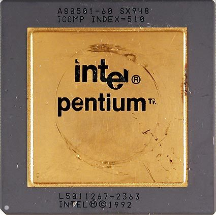
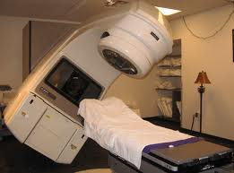

Universidad Nacional Experimental Del Táchira
Decanato De Docencia
Dpto. Ingeniería Informática
SQA
Conocimientos previos
- Proceso de desarrollo de software
- Manejo de proyectos de software.
- Esquema de lanzamientos de un producto.
Objetivo de la clase
- Justificación de realizar el proceso de pruebas.
- Ejemplos de cuando no se realizan pruebas.
- Definiciones básicas.
- Descripción y clasificación de las Pruebas
- Explicación de las pruebas unitarias en Yii.
- Explicación de las pruebas funcionales en Yii.
¿Qué es un error?
- Según la Real Academia Española: "Acción desacertada o equivocada."
- En la informática se le conoce también como bug.
- Es fallo en un programa de computadora o sistema de software que desencadena un resultado indeseado.
Tipos de errores
-
En tiempo de compilación:
Evitan que el código fuente se pueda transformar en un ejecutable. -
En tiempo de ejecución:
Situaciones específicas en las que un evento externo a un programa impide su ejecución.
¿Por qué
hacer pruebas?
¿Por qué
hacer pruebas?
Hagamos estas pregunta, ¿Cuantas veces....
- ... se ha colgado la computadora o ha dejado de responder?
- ... hemos encontrado errores al realizar ciertos pasos cuando se usa una aplicación?
- ...la aplicación ha fallado cuando un supervisor, cliente, audiencia utiliza un programa realizado por nosotros?
- ...una aplicación no funciona correctamente en una plataforma (como un navegador)?
¿Por qué
hacer pruebas?
- Las fallas de software suelen ocasionar graves pérdidas económicas, éstos son de 10 a 100 veces mas costosos de encontrar y reparar.
- Permite garantizar el correcto funcionamiento de la aplicación: cumple los requerimientos solicitados, funciona como se espera, satisface la necesidad de los inversores. Todo esto permite aumentar la calidad del mismo.
- Se pierde menos tiempo al descubrir los errores en la fase de desarrollo y poder corregirlos a tiempo.
Esta bien...sé que debo hacer pruebas
¡Pero son tediosas!
Grandes fallos de software por no hacer pruebas
Mars Climate Orbiter
- El satélite ingresó con un ángulo erróneo a la atmósfera de marte y se incendió.
- El problema fue que la entrada estaba en metros y no en pies.
- No se realizaron pruebas de todas las piezas en conjunto. Ya que fueron realizadas en distintas partes del mundo.
- Se perdieron 327.6 millones de dólares.
Fallo en matemático en procesadores Pentium
- La precisión de los cálculos matemáticos se perdía (sin importar) a partir del 8vo dígito.
- El problema fue cuando un profesor de la universidad de Virginia encontró el error y luego se supo que Intel sabía del problema.
- Intel gastó 275 millones de dolares para sustituir los procesadores a quienes les afectaba este bug.

Windows Genuine Disadvantage
- El 24 de agosto del 2007, un empleado de Microsoft subió código no probado a los servidores de WGA.
- El bug hizo que miles de instalaciones a nivel mundial fuesen marcadas como copias ilegales.
- En el caso de Vista desactivaba funciones importantes del S.O.
Therac-25
- Una máquina para radioterapia. Contaba con una pistola de rayos X y de electrones.

- Tenia un bug de condición de carrera al momento de cambiar de modo, donde se activaba la pistola de rayos X sin aviso envenenando a la persona con radiación.
- El problema era que la validación de los límites de radiación se hacía por hardware. Al crear este modelo no hizo esa limitación pero instalaron el mismo software de una máquina anterior sin realizar pruebas por confiarse en que ya funcionaba correctamente.
Sistema de detección de misiles rusos
- El 23 de septiembre de 1983 el sistema de defensa de misiles soviéticos detecto un lanzamiento de un misil nuclear por parte de E.E.U.U.
- El bug era causado por una variedad de fallas encontradas posteriormente en el sistema, entre ellas, ignorar el calor producido por el sol.
¡Definitivamente debo hacer pruebas!
¿Pero cómo empiezo?
IEEE 829
Estándar para documentar pruebas de software, compuesto de 8 etapas del proceso de documentación.
- Planeación de las pruebas.
- Especificación del diseño de prueba.
- Especificación de los casos de prueba.
- Especificación del procedimiento.
- Reporte de avance de los ciclos probados.
- Registro de la prueba.
- Reporte de incidentes.
- Sumario de la prueba
ISO/IEC 25010:2011
Modelo de evaluación de calidad de software; aporta características sencillas de evaluación y medición.
- Modelo de calidad Métricas externas (Aseguramiento de calidad)
- Métricas internas (Desarrollo)
- Métricas de calidad en uso (Producto final)
Definiciones
básicas
Definiciones básicas
Prueba (Test)
- Según la RAE es: Razón, argumento, instrumento u otro medio con que se pretende mostrar y hacer patente la verdad o falsedad de algo.
- En otras palabras, es la actividad para demostrar a través de una evaluación si es verdad que el software cumple con unas condiciones especificadas.
Caso de prueba (Test Case)
- Según César Javier Acuña (2013), es el conjunto de entradas y condiciones que arrojan resultados esperados desarrollados con un objetivo particular.
Definiciones básicas
Error (bug)
- Según la RAE es: Acción desacertada o equivocada.
- Puede ser humana o del sistema, pero al ocurrir genera resultados incorrectos.
- En otras palabras, es la actividad para demostrar a través de una evaluación si es verdad que el software cumple con unas condiciones especificadas.
Falla
- Es el resultado visible, palpable que se produce un error.
Definiciones básicas
Validación
- Permite determinar si un sistema o uno de sus componentes cumple los requisitos en un momento determinado.
Metodología de Desarrollo de Software
- Según CMS (2008) es un marco de trabajo usado para estructurar, planificar y controlar el proceso de desarrollo en sistemas de información.
Pruebas
Objetivo de las pruebas
- Encontrar errores y fallas durante el desarrollo de software. Para tomar medidas de corrección.
- Errores y fallas mas comunes, que a través de pruebas debemos evitar son:
- Ciclo infinito
- Problemas aritméticos como desbordamientos o subdesbordamientos
- Exceder el tamaño del array
- Utilizar una variable no inicializada
- División por cero
- Acceder a memoria no permitida (access violation)
- Pérdida de memoria (memory leak)
- Desbordamiento de la pila
- Desbordamiento de búfer (buffer overflow)
- Bloqueo mutuo (deadlock)
- Indizado inadecuado de tabla
Clasificación de las pruebas
Pruebas unitarias
- Creadas y ejecutadas por los desarrolladores.
- Deben ser automatizables (no requerir acciones manuales)
- Repetibles y reutilizables.
- Independientes.
- Codificarse con el mismo profesionalismo que el resto del programa.
- Son de tipo “Caja blanca”
Clasificación de las pruebas
Pruebas unitarias (ejemplo)
public function testSave() {
$model = new Usuario();
$model = $this->fillDefaultData($model);
$this->assertTrue($model->save());
} Clasificación de las pruebas
Pruebas funcionales
- Se ejecutan en un ambiente controlado.
- Deben demostrar que los sistemas cumplen tanto con la calidad como funcionalidad con los requerimientos especificados.
- Se enfocan desde el punto de vista del usuario: usabilidad, proceso realizados en la interfaz. Y no en el código de software.
- Son de tipo “Caja negra”
- Creadas y ejecutadas por los desarrolladores.
Clasificación de las pruebas
Pruebas funcionales
public function testCreate()
{
$proyecto = $this->proyectos('proyecto1');
$this->_login();
$this->open('proyecto/create');
$this->assertTextPresent('Create Proyecto');
$this->type('Proyecto_nombre', $proyecto->nombre);
$this->type('Proyecto_descr',$proyecto->descr);
$this->type('Proyecto_fecha_creacion',$proyecto->fecha_creacion);
$this->type('Proyecto_fecha_culminacion',$proyecto->fecha_culminacion);
$this->type('Proyecto_costo_aprox', $proyecto->costo_aprox);
$this->click('name=yt0');
$this->waitForTextPresent('View Proyecto');
}
Clasificación de las pruebas
Pruebas de integración
- Son diseñadas para comprobar el correcto funcionamiento de las distintas partes del sistema.
- Se realizar con la unión pruebas unitarias y segmentos de códigos.
- Utiliza varias partes del sistema en conjunto, accede a la base de datos, controladores, crea hilos para realizar tareas simultáneas, entre otros.
Clasificación de las pruebas
Pruebas de regresión
- Son las pruebas realizadas cada vez que se modifica el sistema, un componente, un grupo de unidades entre otros.
- Validan que todo el desarrollo previo sigue funcionando correctamente a pesar de los cambios introducidos.
- Permiten garantizar que las funcionalidades ya desarrolladas del sistema son estables.
- Básicamente es ejecutar todas las pruebas escritas hasta al momento y verificar que culminaron con éxito.
Clasificación de las pruebas
Otras pruebas
- Pruebas de usabilidad: enfocadas desde el punto de vista del usuario, validan que se puede utilizar fácilmente el sistema, la curva de aprendizaje es suave, entre otros.
- Pruebas de estrés: prueban como el sistema se comporta en condiciones no favorables, llevando el sistema a límites mas allá de los especificados.
- Pruebas de rendimiento: permiten evaluar la efectividad del sistema, los tiempos de respuestas ante diversas situaciones.
Ya sé cuáles pruebas aplicar...pero...

¿Cuándo hacerlas?
¿Cuándo realizar la
fase de pruebas?
Depende la metodología
- Cascada: en ésta metodología las pruebas se realizan al final una vez que se ha terminado todo el desarrollo del prueba.
- FDD: al final de desarrollar una funcionalidad, se realiza la prueba correspondiente a la funcionalidad.
- TDD: se realizan al principio de TODO desarrollo, pues el sistema se va realizando para ir pasando cada una de las pruebas realizadas.
¿Cuándo realizar la
fase de pruebas?
Según el tipo de examen
- Unitaria: se realiza al finalizar el desarrollo de una clase o una funcionalidad específica. Funcionales: al final de desarrollar un requerimiento, un módulo.
- Integración y Regresión: se realizan al realizar cambios importantes en todo el sistema, unión de componentes, o liberación de una nueva versión.
- Pruebas de rendimiento y estrés: se realizan al final todo el desarrollo, pues las optimizaciones se realizan una vez que todo el software ya funcione bien.